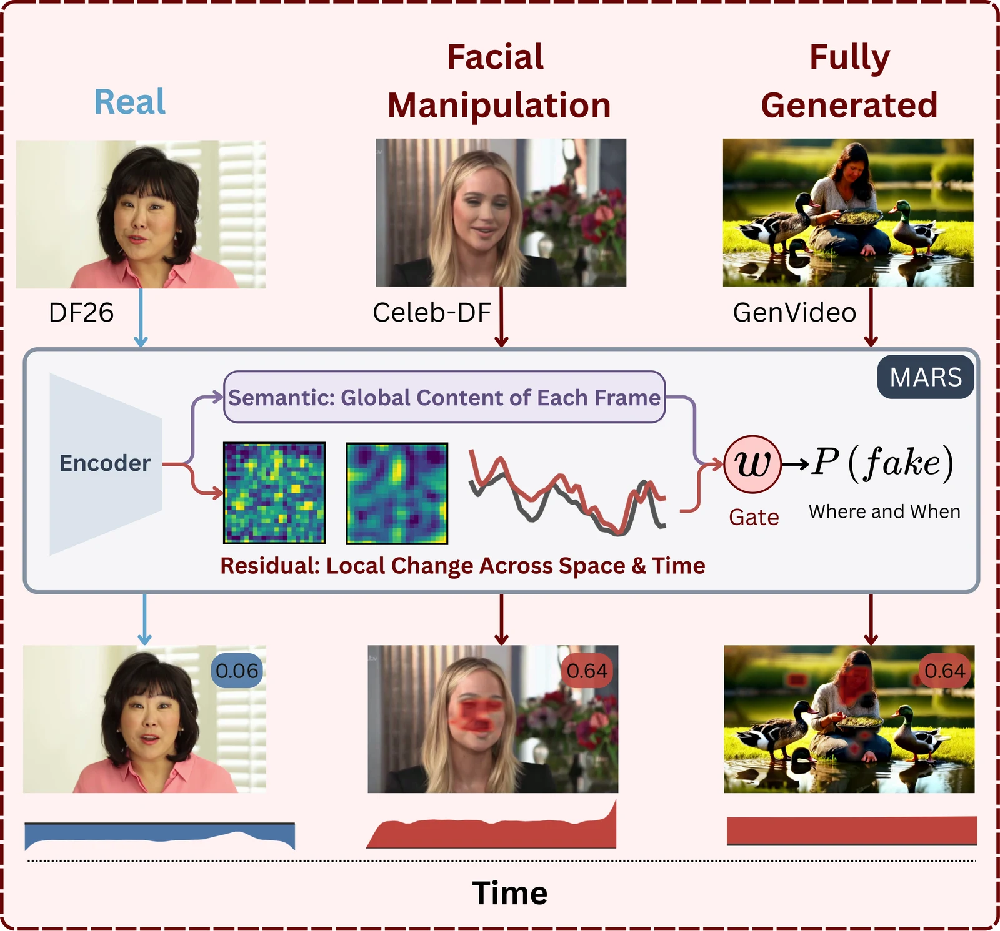
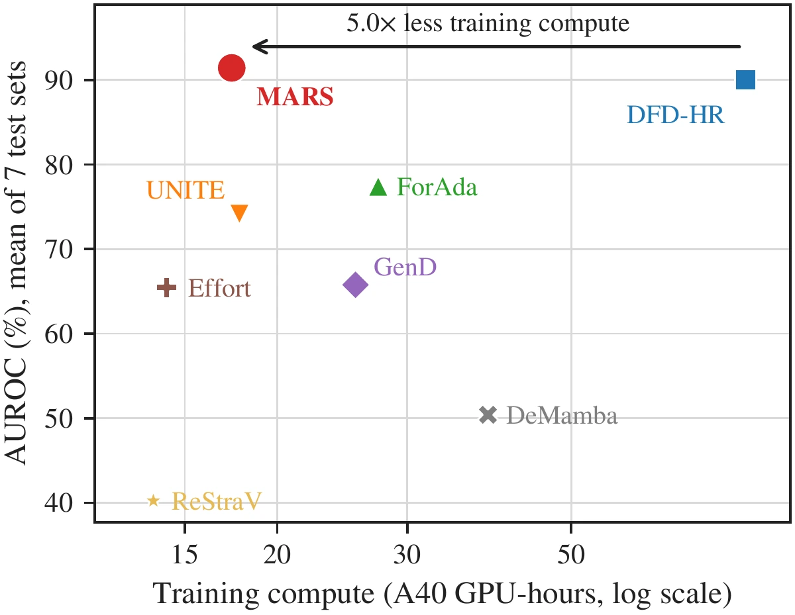
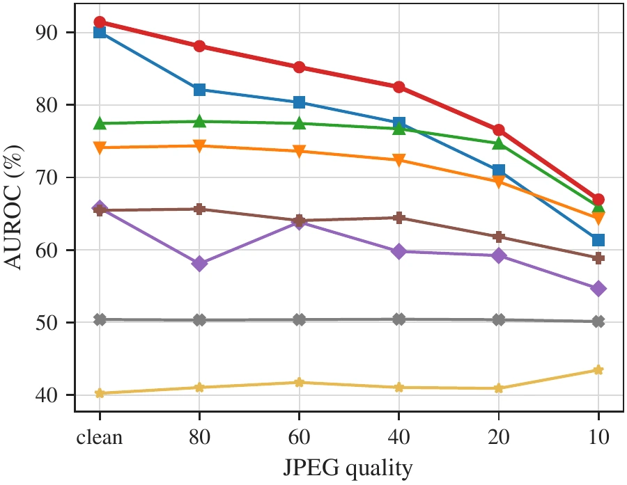
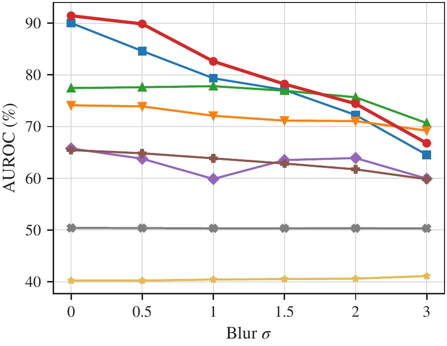
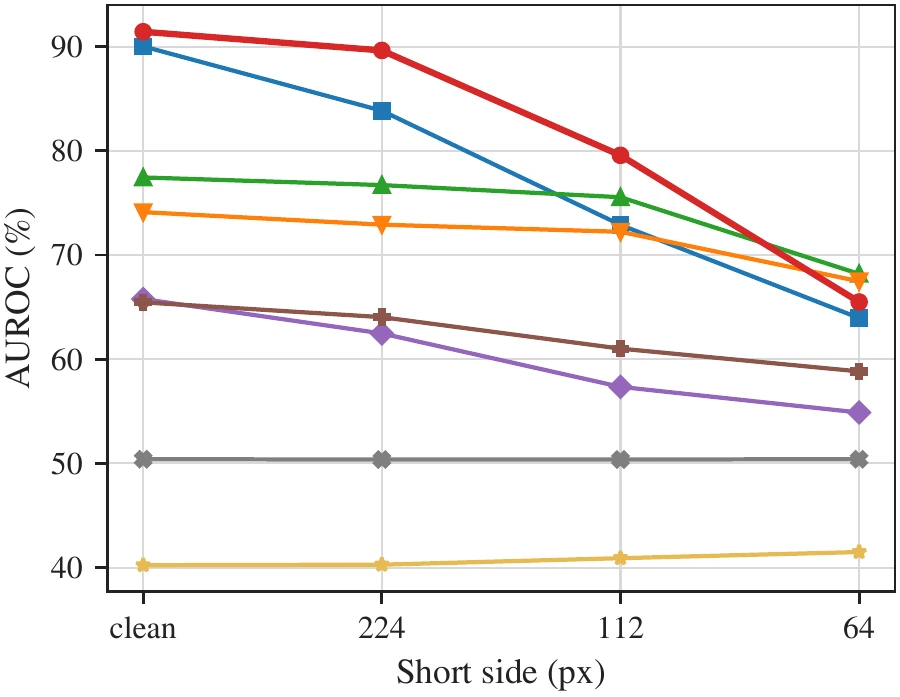
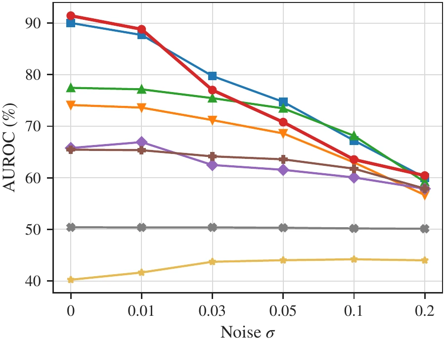
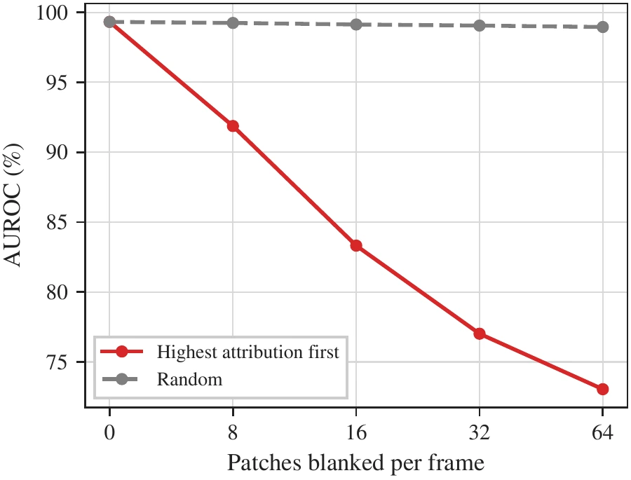
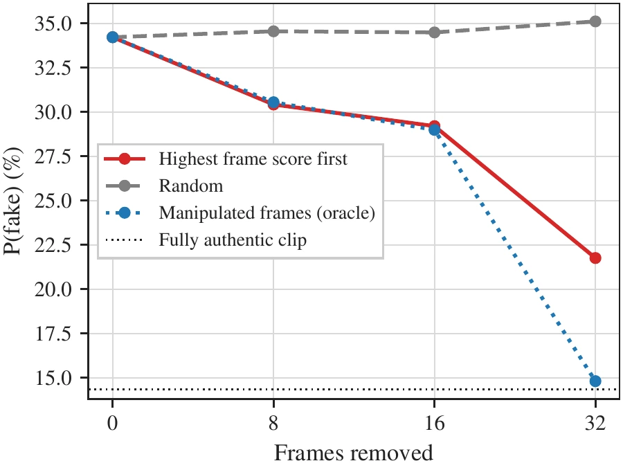

Abstract
Video forgery now spans localized facial manipulations, such as face swapping and reenactment, and fully generated videos whose appearance and motion are synthesized throughout the frame. Detectors therefore have to recognize forgeries beyond the manipulation types and visual content seen during training. Full-frame inputs can hide subtle traces inside scene content, and differences in training data, preprocessing and training budgets make detectors hard to compare.
We introduce Multiscale Appearance-Residual Streams (MARS), a full-frame detector with two complementary paths over one frozen Perception Encoder. The residual path applies fixed spatial and temporal difference-of-Gaussians operators to intermediate patch features, keeping the original features as appearance context, and a temporal transformer models how these changes develop across the clip. The semantic path classifies sampled frames with the complete encoder, tuning only normalization parameters and a classification head.
We retrain MARS and seven recent detectors under a shared full-frame protocol and evaluate them on seven datasets. MARS improves average AUROC by 1.40% over the strongest baseline, DFD-HR, while requiring about 5× less training compute. Trained on facial manipulations alone, it still reaches 93.99% AUROC on GenVideo and 75.50% on DF26.
MARS also exposes signed patch and frame contributions for every prediction, without a separate explanation model. Removing the highest-ranked patches or frames changes its predictions more than equal-budget random removal, supporting the relevance of the displayed evidence to the decision.

Method
Residual features emphasize local variation, but they also respond to natural texture and motion; appearance features transfer across generators but can miss subtle traces. MARS reads one frozen PE-Core-L encoder both ways and lets a gate decide, clip by clip, how much to trust each.
Residual path Fig. 1(c)
Block-12 patch features of all 64 frames are compared with Gaussian-smoothed copies of themselves in space and in time, at three scales each, plus a frame difference. A masked temporal transformer and an attention pool over patches turn these streams into one clip representation.
Semantic path Fig. 1(b)
Sixteen sampled frames pass through all 24 encoder blocks with the path's own copies of the LayerNorm parameters, the only encoder weights that are trained. A linear head scores each frame, and the frame scores are averaged.
Gate and losses Fig. 1(d)
Each path's margin is standardized and a gate, fed with stop-gradient features, mixes them per clip. Every path is trained with its own cross-entropy, and the fused cross-entropy trains only the gate.
Results
All eight detectors are retrained with the same data, clip sampling (64 frames, every second frame), optimizer, three-epoch budget, seed and checkpoint selection on FF++ validation. The table reports video-level AUROC (%) on the FF++ test split and six unseen datasets.
| Method | FF++ | CelebDF | DF-TIMIT | UADFV | HiFiFace | GenVideo | DF26 | Avg. |
|---|---|---|---|---|---|---|---|---|
| Trained on FF++ only | ||||||||
| Frame-level | ||||||||
| ForAda | 86.67 | 86.66 | 96.67 | 95.29 | 71.26 | 54.54 | 39.53 | 75.80 |
| Effort | 72.28 | 59.50 | 82.19 | 94.00 | 58.28 | 51.10 | 36.58 | 64.85 |
| GenD | 70.42 | 66.13 | 98.91 | 51.10 | 38.76 | 64.32 | 59.04 | 64.10 |
| DFD-HR | 99.80 | 94.88 | 99.95 | 97.21 | 86.75 | 66.16 | 70.87 | 87.95 |
| Clip-level | ||||||||
| UNITE | 90.22 | 81.15 | 91.16 | 97.38 | 72.07 | 66.36 | 41.29 | 77.09 |
| DeMamba | 51.54 | 47.74 | 49.33 | 49.25 | 50.51 | 51.29 | 48.78 | 49.78 |
| ReStraV | 52.80 | 49.00 | 4.25 | 52.04 | 53.44 | 6.92 | 59.82 | 39.75 |
| MARS (ours) | 99.23 | 91.25 | 99.85 | 97.92 | 84.92 | 93.99 | 75.50 | 91.81 |
| Trained on FF++ + GTA-V | ||||||||
| Frame-level | ||||||||
| ForAda | 86.55 | 85.25 | 96.57 | 95.59 | 73.45 | 64.70 | 40.04 | 77.45 |
| Effort | 71.77 | 59.05 | 82.33 | 92.71 | 57.93 | 56.45 | 37.98 | 65.46 |
| GenD | 70.47 | 67.44 | 98.69 | 51.81 | 47.47 | 64.92 | 59.63 | 65.78 |
| DFD-HR | 99.80 | 93.89 | 99.59 | 96.25 | 86.26 | 79.48 | 74.95 | 90.03 |
| Clip-level | ||||||||
| UNITE | 84.07 | 73.48 | 86.54 | 98.58 | 66.74 | 66.78 | 42.64 | 74.12 |
| DeMamba | 51.40 | 47.85 | 49.30 | 51.25 | 50.42 | 49.93 | 52.67 | 50.40 |
| ReStraV | 52.79 | 50.90 | 4.16 | 50.94 | 53.11 | 9.79 | 59.93 | 40.23 |
| MARS (ours) | 98.98 | 91.22 | 99.95 | 96.58 | 84.05 | 93.44 | 75.81 | 91.43 |
best and second best within each training setting. Avg. is the equal mean over the seven datasets. GenVideo and DF26 contain fully generated videos only seen at test time.
Over five training seeds MARS averages 90.69 ± 1.02 AUROC, the highest of the eight detectors. Trained on FF++ alone, without any generated video, it reaches 93.99% AUROC on GenVideo and 75.50% on DF26.
Efficiency
MARS trains in 17.4 A40 GPU-hours and 5.46 kWh, against 86.1 GPU-hours and 24.80 kWh for DFD-HR, the strongest baseline, with its encoder frozen apart from the semantic path's LayerNorm parameters. Energy and carbon were measured for every run with the ai-impact-accounting package.

Robustness
The main checkpoints score degraded copies of every test video. Each panel shows average AUROC over the seven test sets as one degradation gets stronger; the leftmost point is the clean test set. MARS achieves the highest average AUROC at every tested JPEG quality, retaining 82.47% at quality 40 compared with 77.55% for DFD-HR. It also leads under downscaling to 112 pixels and blur up to σ = 1.5, although ForAda performs better under stronger blur and downscaling. Gaussian noise exposes a clearer weakness: at σ = 0.05, MARS drops to 70.80%, below DFD-HR's 74.73%.




Faithfulness of the evidence
Because the fused score is a sum of patch and frame terms, MARS returns signed patch maps and frame scores for every prediction. We test whether this evidence is what the detector uses by removing it.


On spliced FF++ clips, the highest-scoring frame falls inside the manipulated segment in 93.30% of clips, against 37.50% by chance.
Quick Start
The repository contains MARS, the seven re-implemented baselines and every script behind the paper's tables and figures. See the README for data preparation and the full list of experiments.
Installation
git clone https://github.com/VectorInstitute/mars.git
cd mars
uv syncBuild a manifest, train and evaluate
# Index a corpus placed under data/ (once per corpus)
uv run python -m mars.data.ffpp --config configs/datasets/ffpp.yaml
# Train MARS on FF++ + GTA-V; the test battery runs after training
sbatch scripts/train.sh --config configs/models/mars/config.yaml
# Evaluate a checkpoint on one test set
sbatch scripts/eval.sh --config configs/models/mars/config.yaml \
--checkpoint checkpoints/mars/mars_s0/best.pt --dataset df26BibTeX
If you use MARS in your research, please cite our paper:
@article{radwan2026mars,
title = {MARS: Multiscale Appearance-Residual Streams for Video Forgery Detection},
author = {Radwan, Ahmed Y. and Raza, Shaina},
journal = {arXiv preprint arXiv:XXXX.XXXXX},
year = {2026}
}Acknowledgements
Resources used in preparing this research were provided, in part, by the Province of Ontario, the Government of Canada through CIFAR, and companies sponsoring the Vector Institute (http://www.vectorinstitute.ai/#partners).
This research was funded by the European Union's Horizon Europe research and innovation programme under the AIXPERT project (Grant Agreement No. 101214389), which aims to develop an agentic, multi-layered, GenAI-powered framework for creating explainable, accountable, and transparent AI systems.